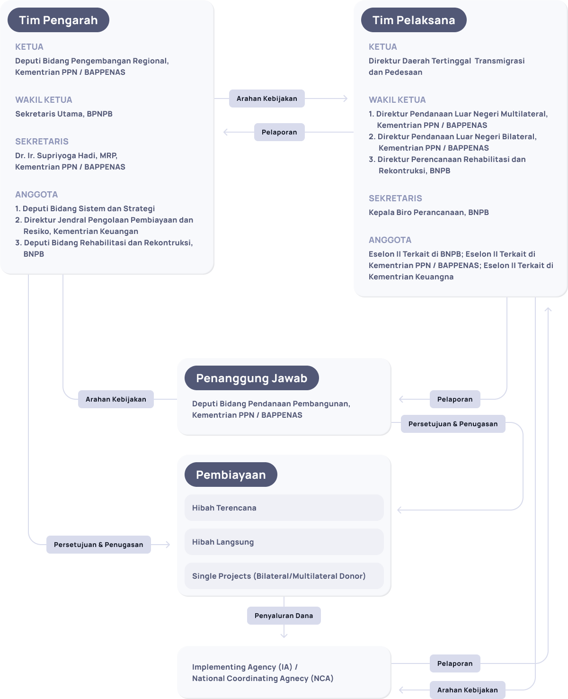
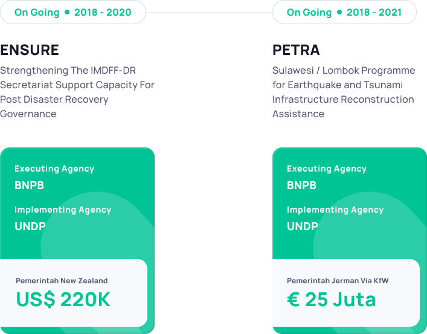

Indonesia
Indonesia
 English
English
SK Menteri PPN / Kepala BAPPENAS No. 72/M.PPN/HK/07/2020
Milestone Project Indonesia Disaster Management Fund
Sejarah
Indonesia Disaster Management Fund
Kepulauan Nusantara memiliki kondisi dan karakteristik geografi yang menjadikannya rentan bencana alam; seperti gempa bumi, letusan gunung berapi, tsunami, longsor, banjir dan sebagainya. Menurut data data Badan Nasional Penanggulangan Bencana (BNPB), antara 2005-2015, terjadi rata-rata 1.545 bencana alam—besar maupun kecil—setiap tahunnya di seluruh wilayah Indonesia. Bencana-bencana tersebut telah memakan korban jiwa, menghancurkan kehidupan masyarakat, serta merusak hasil-hasil pembangunan.
Pemerintah Indonesia—di tingkat nasional maupun daerah—mengubah paradigma dari merespon kejadian bencana menjadi pengurangan risiko bencana, sesuai dengan Undang Undang Nomor 24 tahun 2007 tentang Penanggulangan Bencana. Berdasarkan payung hukum tersebut, pendanaan penanggulangan bencana diperoleh dari berbagai sumber yaitu APBN, APBD dan dana masyarakat luar negeri dan dalam negeri. Peristiwa tsunami di Aceh pada tahun 2004, kemudian peristiwa gempabumi di Yogyakarta dan Jawa Tengah tahun 2006 menghasilkan pengalaman dan pembelajaran dalam pembiayaan pemulihan pascabencana, terutama melalui pengelolaan instrumen pendanaan berupa Trust Fund atau Dana Perwalian.
Berdasarkan pembelajaran dari Multi Donor Fund for Aceh Nias (MDFAN) dan Java Reconstruction Fund (JRF) yang merupakan kolaborasi antara Pemerintah Indonesia, pemerintah daerah terkait dan World Bank, pada tahun 2009 Pemerintah Indonesia membentuk Indonesia Multi Donor Fund Facility for Disaster Recovery (IMDFF-DR) bekerjasama dengan World Bank dan United Nations untuk memobilisasi bantuan internasional bagi pemulihan pascabencana. IMDFF-DR telah berkontribusi dalam mengisi kesenjangan pembiayaan pascabencana di Kawasan Mentawai, Gunung Merapi, Gunung Sinabung dan Gunung Kelud, terutama bagi pemulihan ekonomi masyarakat terdampak bencana dan kegiatan kesiapsiagaan maupun pengurangan risiko bencana.
Pengalaman Pemerintah mengelola MDFAN, JRF dan IMDFF-DR menghasilkan pembelajaran bahwa koordinasi, sinergi dan leadership Pemerintah memegang peranan yang sangat strategis dalam pelaksanaan kegiatan dan pendanaan penanggulangan bencana dalam fase sebelum terjadi bencana, fase darurat maupun fase pascabencana. Pemerintah kemudian memutuskan untuk mentransformasikan IMDFF-DR sebagai instrumen pendanaan menjadi Indonesia Disaster Management Fund (IDMF) atau Pengelolaan Hibah Penanggulangan Bencana (PHPB) sebagai instrumen koordinasi.
IDMF/PHPB dikoordinasikan oleh Tim Koordinasi Pengelolaan Hibah Penanggulangan Bencana (TK-PHPB), yang diwakili oleh tiga unsur kelembagaan pemerintah dari Kementerian Perencanaan Pembangunan Nasional/Bappenas, Badan Nasional Penanggulangan Bencana dan Kementerian Keuangan. Tim Koordinasi PHPB melaksanakan tugas pengelolaan hibah dalam rangka: a) memastikan konsistensi kegiatan hibah dengan program dan prioritas Pemerintah, b) memastikan tidak terjadi duplikasi kegiatan maupun pembiayaan dari sumber hibah, c) meningkatkan tatakelola pemanfaatan hibah sesuai peraturan yang berlaku.
Sebagai Instrumen Koordinasi, salah satu tujuan IDMF/PHPB adalah untuk mengeratkan kemitraan dengan Mitra Pembangunan Bilateral dan Multilateral dalam pelaksanaan program penanggulangan bencana di Indonesia. Pemerintah Indonesia melalui Kementerian Perencanaan Pembangunan Nasional/Bappenas, Badan Nasional Penanggulangan Bencana dan Kementerian Keuangan menyambut baik bantuan internasional berupa Kerjasama Bilateral dan Multilateral dalam mewujudkan ketahanan bencana di Indonesia.
Dasar Hukum Pengelolaan Hibah
Terimakasih atas pesan kritik dan saran membangun Anda untuk kami!